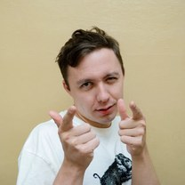
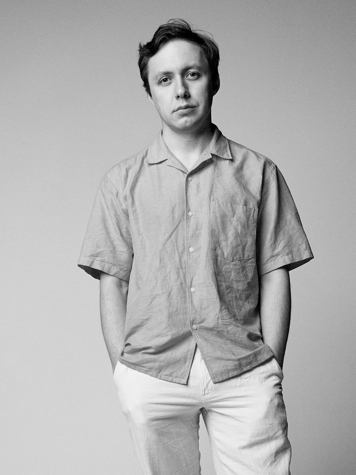

System Design:от паники к алгоритму
Научись уверенно проходить секцию System Design и повысь свои шансы на трудоустройство в бигтех или повышение грейда до сеньора.
Это про тебя, если…
Знакомая ситуация?
Боязно идти на секцию
На System Design даже идти боязно: непонятно, что там вообще спрашивают и по каким правилам оценивают. Проще пока не соваться, вот и откладываешь собес месяцами. А это лишние месяцы на старом грейде и старой зарплате.
На работе не сталкивался полноценно с сисдизом
На работе круды и монолит, highload видел только в статьях. А на собесе просят спроектировать то, что руками не трогал.
Заучил типовые задачи, но если копнут в сторону, начинаешь сыпаться
Заучил теорию, кабанчика, пересмотрел разборы на ютубе, отвечаешь по шаблону. А копнут глубже (а если нагрузка вырастет, если узел упадёт) или дадут незнакомую задачу, и оказывается, что как оно внутри устроено, ты не понимаешь и начинаешь плыть на уточняющих вопросах.
Без понятия, как всё успеть решить
Дают задачу, которую ты вживую никогда не проектировал, и ты не знаешь, за что хвататься, с чего начать, что рисовать, о чём спрашивать. А тебе за 50 минут надо: собрать функциональные и нефункциональные требования, расписать модель данных, спроектировать API, нарисовать схему, поговорить про масштабирование и глубоко разобрать узкие места. И ты в итоге банально можешь не успеть решить задачу.
Нет чёткого понимания, с чего начать
Услышал "спроектируй ленту" и сразу кинулся рисовать базы и сервисы. А через пять минут понял, что не спросил ни про пользователей, ни про нагрузку, ни что вообще важно. А время уже не вернуть.
Между тобой и следующим грейдом стоит одна секция
Открой вакансии senior в бигтехе — она почти везде в этапах найма. Не в требованиях «стать архитектором», а в списке собеседований, которые ты проходишь на обычного разработчика. Это не отдельная профессия, это фильтр на входе: пока ты его не проходишь, грейд и вилка стоят на месте.
Скриншоты открытых вакансий, август 2026
Почему не получается пройти сисдиз
Кажется, что на System Design валят непонятно за что и всё решает везение: какая попадётся задача и какой интервьюер.
Человеческий фактор тут есть, глупо это отрицать. Задача может попасться неудобная, да и секцию каждый ведёт по-своему: один копает в базы, другой в отказоустойчивость, третий в оценку нагрузки.
Только повлиять на это ты не можешь, а вот на остальное вполне: как разложил задачу, что уточнил на старте, чем обосновал выбор, куда сам увёл разговор.
Ошибок, которых можно было не допускать, набирается прилично. Каждая портит впечатление, а из впечатления и складывается решение по секции.
Самые частые ошибки разобрал в ролике за 8 минут.
Сисдиз проходят не самые умные, а те, у кого есть понятный алгоритм решения и понимание всей необходимой базы.
Что на самом деле происходит на секции
Секция выглядит чёрным ящиком, пока не знаешь, что внутри. А внутри — один и тот же маршрут: интервьюер ведёт тебя по нему все 50 минут. Вот он целиком — и то, где на каждом шаге чаще всего ломаются.
- Что делает интервьюерГде ломаютсяГде чиним
- Уточняет требованияКинулся рисовать, не спросив ни про чтоурок 04
- Просит посчитать нагрузкуПоплыл: сколько это в байтах и запросахурок 05
- Ждёт схему верхнего уровняНарисовал коробки и не объяснил, зачем каждаяурок 03
- Копает в хранилищеНазвал базу наугад и не смог обосноватьурок 13
- Давит на узкие местаКопнули в отказ узла — начал плытьуроки 19–21
- Слушает, как ты рассуждаешьЗвучал как пересказ ютуб-роликаурок 41
5 недель. От базовых основ до практических кейсов.
В программу включил всё нужное, чтобы пройти секцию сисдиза.
А в практике сделал упор на популярные системы: их чаще всего и дают на собесах, а внутри каждой столько всего, что на одной задаче применяешь половину курса.
Неделя 01 · уроки 01-12
Алгоритм интервью и первый слой архитектуры
Алгоритм интервью и первый слой архитектуры
К концу недели у тебя есть каркас, по которому раскладывается любая задача, и понимание, с чего вообще начинается проектирование любой системы.
- 01. Как устроено SD-интервью и почему на нём валятся сильные. Три формата секции и как разложить 50-минутный слот.
- 02. Что оценивает интервьюер: сигналы, а не угадайка. Восемь ходов, которые работают в плюс, и что портит впечатление.
- 03. Пять шагов разбора задачи: каркас на случай паники. Что происходит на каждом шаге и какими фразами переходить между ними.
- 04. Уточняющие вопросы: первые пять минут, в которых и валят. Десять вопросов на старте и пять тем, которые легко пропустить.
- 05. Оценка нагрузки: как считать в уме через ×10 DAU. Три источника цифр, базовые формулы и сквозной прогон на каталоге магазина.
- 06. REST API на собесе: Idempotency-Key и «сначала монолит». Шаблон ручки из семи пунктов и с чего вообще начинать проектировать.
- 07. Сквозной кейс: Лента Avito от первого вопроса до глубокого разбора. Прогоняем все пять шагов на живом примере.
- 08. Балансировка нагрузки. L4 против L7, восемь алгоритмов и почему gRPC ломает обычную балансировку.
- 09. Консистентное хеширование. Кольцо и виртуальные ноды, сколько данных реально переезжает, миграция шардов Notion за четыре фазы.
- 10. API Gateway и обратный прокси. Что gateway добавляет к прокси, зачем BFF и как не отрастить толстый gateway.
- 11. CDN. Push против pull, многоуровневый кэш, ключ кэша, инвалидация и подписанные ссылки.
- 12. DNS. Иерархия и резолвинг, типы записей, TTL и миф про десять секунд после деплоя.
Экстренная выкатка: 50 млн устройств за 6 часов
Сценарий. В мобильном приложении федерального сервиса нашли критическую уязвимость, и её уже эксплуатируют. Нужно раздать обновление на 50 млн устройств так, чтобы за шесть часов обновились 90 процентов.
Что сделаешь. Начнёшь с уточняющих вопросов: сначала напишешь свои, потом сверишься с карточкой ответов интервьюера и увидишь, что упустил. Дальше посчитаешь пиковый трафик и счёт за CDN, разведёшь дельты и полные пакеты, придумаешь, как управлять темпом раскатки и что делать, если она пошла не так.
Ты знаешь, что делать в первые пять минут секции — там она чаще всего и валится.
- Раскладываешь незнакомую задачу на пять шагов и в каждый момент понимаешь, какой следующий
- Вытягиваешь требования вопросами и считаешь нагрузку до того, как начал рисовать схему
- Проводишь запрос по слоям — DNS, CDN, балансировщик, API Gateway — и объясняешь, зачем нужен каждый
Неделя 02 · уроки 13-23
Ядро баз данных
Ядро баз данных
Самая большая неделя курса, одиннадцать уроков. Начинаем с того, как база кладёт данные на диск и почему запрос идёт через индекс, дальше берём транзакции и уровни изоляции, а заканчиваем тем, что происходит с данными, когда они перестают помещаться на один узел. Именно на этих вопросах на секции сыпется большинство, поэтому уроков здесь больше всего.
- 13. Модели данных и выбор БД. SQL против NoSQL, типы хранилищ и как базу выбирают под конкретную задачу.
- 14. Как база хранит данные: WAL и страницы. Страницы и куча, журнал раньше данных, почему коммит ждёт диск, восстановление после крэша.
- 15. Индексы под собес. B-Tree против LSM, ловушка порядка колонок в составном индексе и когда индекс вредит.
- 16. Транзакции и ACID. Что стоит за каждой буквой и почему ACID и BASE это не противоположности.
- 17. Конкурентный доступ: блокировки против версий (MVCC). 2PL, гранулярность, deadlock, снапшот и vacuum.
- 18. Уровни изоляции и аномалии: любимое место дожима. Четыре уровня как контракт, а не шкала, и матрица "уровень против аномалии".
- 19. Репликация: с одним лидером и без лидера. Отставание реплики и три аномалии чтения, кворум, раскол и фенсинг.
- 20. Репликация с несколькими лидерами (multi-master). Три класса конфликтов, четыре стратегии резолюции, топологии обмена.
- 21. Консенсус: сколько реально надо знать про Raft и Paxos. Term, голоса и лог, split vote при разрыве сети, шесть систем консенсуса в проде.
- 22. Партиционирование и шардирование. Пять техник, гибридный шардинг, горячий ключ и плохие ключи шардирования.
- 23. CAP и PACELC: что отвечать про согласованность. Почему CAP смотрят по фичам, а не по системе, и как обосновать выбор.
Списать деньги 1,2 млрд раз в сутки и не уйти в минус
Сценарий. Рекламная сеть: 1,2 млрд показов в сутки, тысячи кампаний одного клиента тратят один общий кошелёк, и 1 процент аккаунтов даёт 60 процентов всех списаний.
Что сделаешь. Выберешь базу и ключ шардирования, придумаешь, что делать с аккаунтами, на которые приходится основная нагрузка. Подберёшь уровень изоляции, чтобы баланс не ушёл в минус, а кампания не потратила больше дневного лимита. Каждое решение придётся обосновать письменно: одного названия базы тут не хватит.
Ты объясняешь выбор базы так, что дополнительные вопросы тебя не сбивают.
- Объясняешь, почему выбрал именно эту базу — через модель данных и паттерн запросов
- Держишь дожим по индексам, транзакциям и аномалиям изоляции: на этом блоке топят чаще всего
- Сам проговариваешь, что сломается при шардировании и репликации, и как ты это чинишь
Неделя 03 · уроки 24-32
Кэш, очереди и устойчивость
Кэш, очереди и устойчивость
Кэш, очереди и всё, что держит систему на ногах под нагрузкой: чем ускоряют чтение и чем за это платят, как сервисы обмениваются событиями и не теряют их, что делать, когда нагрузка выросла в десять раз или узел упал.
- 24. Кэширование: стратегии и архитектура. Кто ходит в базу на промахе, пять ролей Redis, вытеснение и два уровня кэша.
- 25. Проблемы кэша и инвалидация: горячий ключ и лавина. Пять проблем и чем лечится каждая, чем убирать устаревшее, холодный кэш и сто процентов промахов.
- 26. Очереди и брокеры. Очередь против лога, гарантии доставки, DLQ и антипаттерн "топик на юзера".
- 27. Идемпотентность и transactional outbox: повтор без дублей. Где на самом деле проходит контракт, outbox против двойной записи, где ловить дубли.
- 28. Распределённые транзакции: 2PC, 3PC, сага. Blocking problem, почему компенсация это не откат, резерв вместо компенсации в TCC.
- 29. Ретраи, таймауты и backoff. Почему наивные ретраи дают каскад: jitter, дедлайны через всю цепочку, потолок повторов.
- 30. Circuit breaker и bulkhead. Три состояния, при каких условиях размыкается, изоляция ресурсов и логика на клиенте.
- 31. Rate limiting. Три способа счёта и их отношение к всплеску, где держать счётчик, почему нельзя считать по IP.
- 32. Масштабирование и плавная деградация: что выключаем первым. Вертикально или горизонтально, почему процессор плохая метрика и что такое стадо запросов.
Чёрная пятница в Ozon: пик ×20 и подвижные цены
Сценарий. Распродажа началась: нагрузка на маркетплейс выросла в двадцать раз, цены пересчитываются каждые пять минут, а боты выгребают товар быстрее живых покупателей.
Что сделаешь. Разложишь кэш так, чтобы обновление цены не уронило базу, соберёшь оформление заказа сагой на три сервиса. Затем выставишь лимиты, которые придержат ботов и пропустят людей. Отдельно решишь, что выключаешь первым, когда система всё равно перестанет тянуть.
Вопрос «а если нагрузка вырастет в двадцать раз» тебя больше не пугает: ты понимаешь, из чего собирается ответ.
- Решаешь, что кэшировать и как инвалидировать, чтобы сброс кэша не положил базу
- Разводишь синхронное и асинхронное и объясняешь, почему повтор запроса не спишет деньги дважды
- Отвечаешь, что делает система, когда лёг соседний сервис: таймауты, circuit breaker, лимиты — и что выключаешь первым
Неделя 04 · уроки 33-37
Боевые кейсы: соцсети и медиа
Боевые кейсы: соцсети и медиа
Пять систем разбираем целиком: мессенджер, лента, фото-соцсеть со Stories, видеоплатформа и музыкальный стриминг. Каждую ведём в том же порядке, что и на секции: требования, модель данных, API, общая схема, углубление в узкое место.
- 33. Мессенджер: Telegram. Как держать 50-100 млн соединений, доставка и порядок сообщений, большой чат и всплеск звезды, presence и синхронизация между устройствами.
- 34. Лента: Avito Объявления. Fan-out и горячий источник. Плюс почему это не "лента Twitter" и почему это стоит сказать первым.
- 35. Фото-соцсеть со Stories. Три числа и три разных горлышка, двухфазная загрузка, медиа-пайплайн.
- 36. Видеоплатформа: YouTube. Конвейер транскодирования, доставка через ABR и CDN, счётчик просмотров без инкремента в транзакции.
- 37. Музыкальный стриминг: Яндекс.Музыка и Spotify. Почему аудио это не видео и как устроены доставка и плейбек.
Twitch: прямой эфир на 5 млн зрителей и живой чат
Сценарий. Идёт футбольный матч, эфир смотрят пять миллионов человек, и все пишут в чат одновременно. Видео нельзя нарезать заранее, оно рождается прямо сейчас. Каждая лишняя секунда задержки как спойлер: у соседа гол уже забили, а у тебя ещё нет.
Что сделаешь. Спроектируешь систему целиком: захват и доставку живого видео до зрителя, фанаут чата на миллионы подключений, деградацию качества, когда канал у зрителя проседает.
Ты понимаешь, как собирается система целиком: от требований до узких мест.
- Разбираешь реальную задачу за один заход, от требований до глубокого разбора, и не теряешь нить
- Знаешь, как устроены ленты, доставка медиа и рассылка на миллионы подписчиков — на пяти разобранных системах
- Замечаешь решения, которые повторяются из задачи в задачу, и переносишь их на систему, которую видишь впервые
Неделя 05 · уроки 38-41
Сложные кейсы и поведение на собесе
Сложные кейсы и поведение на собесе
Билеты с double booking, автодополнение в поиске и заказ такси. Три кейса, где всё упирается в конкуренцию за ресурс, релевантность и геоданные. Плюс отдельный модуль про то, как вести себя в слоте: думать вслух, отвечать, когда копают, и выбираться из тупика.
- 38. Билеты: Яндекс Афиша и double booking. Четыре уровня защиты от двойной продажи, резерв с TTL и идемпотентная оплата.
- 39. Поиск: Яндекс Поиск, Google и autocomplete. Trie с предрассчитанным топ-K для подсказок, scatter-gather по шардам и ранжирование для поиска.
- 40. Заказ такси: Яндекс Такси и Uber. Почему Trip и Order это разные объекты, два потока вместо одного, гео-индекс и матчинг.
- 41. Как не звучать как YouTube-видео. Думать вслух, реагировать, когда копают, и выбираться из тупика, вместо пересказа заученного.
Airbnb: последнее свободное жильё и поиск по карте
Сценарий. В Сочи жильё разбирают под ноль: на праздничные даты осталось несколько сотен свободных вариантов, а ищут их два миллиона человек. Каждый тянет карту, накидывает фильтры и смотрит, что ещё свободно рядом с морем. Дальше самое интересное: двое открывают одну и ту же квартиру и жмут «забронировать» в одну секунду. Один должен получить подтверждение, второй — сразу увидеть отказ и вернуться в поиск, пока варианты рядом ещё есть.
Что сделаешь. Спроектируешь бронирование целиком: поиск с фильтрами, выдачу «жильё рядом со мной» и тот самый кейс, когда двое одновременно бронируют последний свободный вариант на одни и те же даты. Это финал курса, поэтому задача идёт с таймбоксом: сорок пять минут, как на настоящем собесе, где никто не ждёт идеального решения.
Ты проходишь секцию под давлением, в условиях нехватки времени.
- Разбираешь задачи, где легко утонуть: конкуренция за дефицитный ресурс, поиск, гео
- Работаешь в таймбоксе: успеть за отведённое время — отдельный навык, и он тренируется
- Проговариваешь компромиссы вслух на языке, который слышит интервьюер
Как устроено обучение

Смотришь уроки и ходишь на живые разборы
Каждую неделю открывается несколько видеоуроков по теме, плюс живой Q&A, где задаёшь любой вопрос по материалу и собесам. Дедлайнов по неделям нет: не успел на этой, спокойно догоняешь на следующей. Срок один и общий на весь курс, внутри него идёшь в своём темпе.
Делаешь практическое задание с упором на реальную практику
После уроков открывается задание, собранное как на реальном сисдизе, но с упором именно на тему недели. Разбирали базы, значит проектируешь с упором на хранение: выбираешь БД, индексы, ключ шардирования, а кэш, очереди и остальное берёшь готовыми блоками. Сложность нарастает постепенно, и в последние две недели ты уже проектируешь систему целиком, где всё сходится сразу.
Твоё решение разбирает живой ментор
Ментор лично разбирает твоё решение и показывает, где ошибся, что можно было спроектировать правильнее или лучше.
Проходишь групповую практику
Каждую неделю небольшая команда проектирует задание по пройденной теме, ментор подключается к группе и направляет по ходу решения. А потом вы защищаете своё решение вслух перед другими командами: они задают вопросы вам, вы задаёте им. Ровно тот навык, которого не хватает на реальном собесе.
Читаешь разборы того, как это работает в проде
К каждой теме в конспекте идут не только схемы, но и история из жизни больших компаний: как ту же задачу решали у них, что в итоге сломалось и чем чинили. Такие примеры и запоминаются, и хорошо звучат на собесе.
А ещё у нас полный комфортик в чатике и на лекциях :)
Обсуждаем задания и болтаем за жизнь без духоты и формальностей.
Приходят backend-инженеры из разных компаний и с разными стеками, так что половина пользы в том, как соседи по потоку решают ту же задачу иначе.
Что ты будешь уметь после курса
-
Незнакомая задача больше не ставит в тупик: у тебя в голове весь порядок шагов, от требований до узких мест, и понятно, что делать на каждом.
-
За первые минуты вытягиваешь, что вообще нужно построить, и не уносишься решать не ту задачу.
-
Объясняешь, почему выбрал такую базу или подход, а не называешь наугад и не молчишь.
-
Когда начинают копать вопросами, отвечаешь по делу, а не впадаешь в ступор.
-
Успеваешь за 50 минут и ведёшь собес сам, а не интервьюер тащит тебя за руку.
-
Спокойно рассуждаешь вслух: слышно твой ход мысли, а не заученный текст.
-
07 · от паники к алгоритму
И главное, больше никакой паники на собесе. Вместо неё у тебя алгоритм и спокойная уверенность, что секцию ты пройдёшь.
Автор курса:
Олег Козырев
-
Т-Банк Staff EngineerРазрабатывал LLM-платформу для создания ИИ-продуктов внутри компании
-
Авито Senior EngineerРазрабатывал внутреннюю платформу для сотен сервисов корпорации
-
Ozon Tech Senior EngineerРазрабатывал сервисы логистики, модерации контента и мониторинга доставки
-
Route 256 ПреподавательМенторил и преподавал курсы по построению микросервисов в школе Ozon Tech

Тарифы
Материал курса в обоих тарифах одинаковый, все 41 урок и все разборы. Разница в проверке домашек от ментора и в живой практике по пройденному материалу каждую неделю.
без переплаты: сумма та же, что при оплате целиком
- 41 урок: видео плюс подробный текстовый конспект. Алгоритм интервью, сеть и доставка, хранение данных, кэш и очереди, устойчивость под нагрузкой, поведение на секции
- 8 систем, разобранных целиком: Telegram, лента Avito, фото-соцсеть со Stories, YouTube, Яндекс.Музыка, билеты Яндекс Афиши, поиск с автодополнением, Яндекс Такси. Каждую систему разбираем как на собесе: требования, нагрузка, узкие места, куда копнёт интервьюер
- Разбираем и то, как это ломалось в проде: откат Amazon Prime Video обратно в монолит, 140 микросервисов Segment, которые собрали назад
- Домашка каждую неделю. Задачи в формате секции: посчитать RPS под свою нагрузку, выбрать ключ шардирования и объяснить, почему дата заказа тут плохой ключ, собрать saga для заказа через три сервиса
- Живой еженедельный Q&A с Олегом. Разбираем все непонятные аспекты, отвечаю на вопросы по материалу и по собесам, иногда проектируем кейс прямо у доски
- Доступ к общему чатику потока
- Доступ к урокам и записям разборов — 2 года. Не на время потока: вернёшься к материалу перед любым следующим собесом
Разбор твоих домашек ментороместь в тарифе с практикойГрупповая практика и защита решения вслухесть в тарифе с практикой
Это анкета, а не оплата
без переплаты: сумма та же, что при оплате целиком
- Всё, что есть в Стандарте: 41 урок, 8 разобранных систем, домашки, живой Q&A и чат потока
- Ментор разбирает каждую твою домашку. Читает схему и твои обоснования и пишет подробный разбор: где решение поедет под нагрузкой, какой выбор не объяснён, что на секции спросят следом
- Домашки проверяем 8 недель, на три недели дольше самого курса. Ушёл в аврал на работе или отстал на неделю, спокойно догонишь: проверка никуда не денется
- Групповая практика каждую неделю. То, ради чего вообще берут этот тариф
- Доступ к урокам и записям разборов — 2 года. Не на время потока: вернёшься к материалу перед любым следующим собесом
- Небольшая группа получает задание по пройденной теме
- Ментор подключается к группе и направляет по ходу
- Потом вы защищаете решение вслух под вопросами, как на секции
Это анкета, а не оплата
- Рассрочка до 12 месяцев4 583 ₽/мес за Стандарт и 7 249 ₽/мес за тариф с практикой. Срок можно взять и короче. Сумма та же, что при оплате целиком: цена курса не зависит от способа оплаты
- Оплата от компанииМногие работодатели оплачивают обучение сотрудникам. Напиши в телеграм, и я пришлю счёт и документы на юрлицо
- Оплата из другой страныИностранной картой и не только рублями. Рассрочка работает в том числе для Беларуси и Казахстана
Если в первую неделю после старта поймёшь, что курс тебе не подходит, вернём всю стоимость. Решишь уйти позже, пересчитаем и вернём за непройденную часть.
Оффер. System Design это лишь один этап найма, и решение принимает не курс. Обещаем другое: ты перестанешь плыть на этой секции и будешь понимать, что делаешь и почему.
Ещё я веду YouTube
и ламповый TG-канальчик
Разбираю Go, архитектуру и собесы. Материал там другой, чем на курсе, зато видно, как я объясняю, и можно просто со мной познакомиться. На YouTube 13 000 подписчиков, в Telegram 11 000. В комментариях сижу сам: закидывай любой вопрос, отвечу.

FAQ: заблуждения и частые вопросы
Кажется, System Design это сложно, я ещё не дорос до такого уровня
Какой уровень нужен, чтобы пройти курс?
Кому подойдёт курс
А я точно смогу применить это на реальном собесе?
Чем тариф "С проверкой и практикой" отличается от Стандарта?
Сколько нужно уделять времени? Смогу совмещать с работой?
Что делать, если не успеваю за потоком или пропущу неделю?
Можно вернуть деньги, если курс не подойдёт / передумаю?
Я не из России. Можно оплатить иностранной картой / валютой?
Можно оформить налоговый вычет 13%?
Я юрлицо. Можно оплатить курс своему сотруднику?
Продажа откроется 27 августа, старт потока 7 сентября
Записаться на поток* После нажатия откроется анкета предзаписи